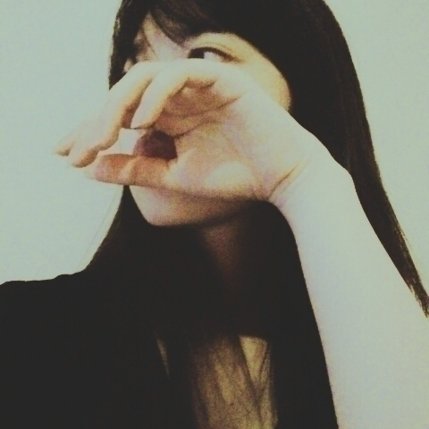
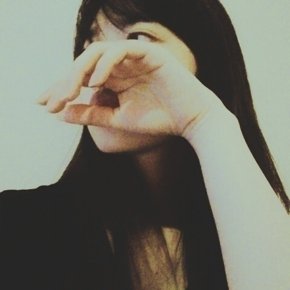

2016/0828Sun唐揚げと前髪
おはようございます
こんにちは
こんばんは
各地域で沢山美味しい物を
食べれて幸せ
よく、ご飯に興味なさそうと言われますが
一応、食べてます(> <)
今年はご飯会皆勤賞でした
去年は１か所だけ行けなくて
何で私がご飯会に参加するようになったかと言いますと凄い人見知りで
私なんかが話しかけて良いのかなとか
いつもソワソワしちゃって
なかなか自分から行けない性格なのですが
変えたいなって思い
それからご飯会には参加するようになりました(^^)
ご飯会ではたくさん楽しい思い出も出来るから
これからもできるだけ参加して行きたいです✨
卒業するとき
きっと思い出すんだろうな、、、
生きてて良かった
乃木坂46で良かったって思えるような素敵な思い出沢山作るぞ
神宮初日という事で
真夏の全国ツアーを少し振り返ります。
今年の地方公演は
福岡でラストでした(^^)
神宮はBirthdayLIVEになるのでこの形では本当にラストでした。
始まる前は
不安も大きかったです
最近、いい事なかったし
ずっと誰にも言えない事で
モヤモヤしていたのですが
ステージに上がればファンの皆さんが居て
皆さんの声や笑顔にパワーを貰い本番は本当に楽しいものでした
ありがとうございました✨
回数を重ねるごとに
一体感
メンバー同士はもちろん
来て下さる方や会場は違えど一体感は上がっていった気がしました。
今回地方公演はれいかさんは体調不良の為欠席でしたが私はここだけの話
毎公演毎公演東京方面にLoveを送ってました、、、m(._.)m
神宮は皆で頑張ります
ので全員が楽しく無事に終えられるよう祈っていてください✨
この形で
乃木坂の詩を歌うのは最後なのかなとか考えると
涙が出そうでした
でも、まだ今年の夏は終わってないからグッとこらえました。
去年の神宮、今でも覚えてます悔しかった。
加入してからずっと
悔しい事ばかりです
でも、その悔しい気持ちのお陰でもっともっともっと って
自分でも良くわからないくらいに静かに食らいついてきました。
去年の神宮の別れ際、もっと好きになるの動画を見直したとき
私はモニターには一度も抜かれていませんでした。
でも、皆の間から
ほんの少しだけ見きれていた私の目は自分でも自分では無いみたいに何かを訴えてました。
何かを狙っているみたいに
鋭かったです。
目は口ほどに物を言う
口下手で皆に私の考えや心の声が上手くは届かなくて
よく、誤解されることのある私ですが
なら、目で訴えようって
去年の今頃は
アンダー３列目から
絶対に抜かしてやるんだと
前を見つめていました。
今年の神宮は乃木坂46にとって挑戦です
３日間野外コンサート
楽曲数も桁違いです。
メンバーやスタッフさんがどんなに頑張っても
天候だけが、、、
どうにか
台風の勢いだけは
止まって欲しい所ですが、、、(> <)
きっとこれから私達がやろうとしてる事は
誰もやったことの無い事です！
全部出来たら自信に繋がる気がします！絶対！
どんなに月日は流れても
人間には学ぶことが沢山あります完成が無いので
完成があったら面白くない
生きてる意味がない
何かを吸収したいです。
とりあえず、怪我無く
無事地方公演を終えることができて良かったです。
関わって下さった全ての皆様に感謝しております。
心よりありがとうございました。
去年の神宮前の私のブログ
読んだらなんか面白かった
去年の寺田蘭世を知らないよって方はお時間あったら読んでみて下さいね(> <)
では、神宮初日お越しの方はまた後でお会いしましょう(｀_´)ゞ
写真がない、、、
 

いつもと違う雰囲気（´-`）
行ってきます
2016/0820Sat揚げない
真夏さん
白石さん
Happy Birthdayです
ここでは恥ずかしいので
短めのご挨拶で、、、(> <)
お二人共大好き
良い一年になりますように
ちなみにね、
真夏さんのお部屋にお邪魔してプチドッキリ？！しました楽しかった
若いって素晴らしいって思いました✨

シュークリーム
私も顔面シュークリームとかケーキやってみたいな憧れですm(._.)m
そして、真夏さんのお部屋に行く前
生田さんが私のお部屋に一瞬遊びに来てくれました
急に、ピンポンがきたものですからビックリしました
そっとお土産をくれました
ありがとうございました(^^)
ツアーの中身の感想は
乃木恋リアルを
やらせて頂きました、、、
まさか、自分に回ってくるとはお恥ずかしい
あの日限定の
ワンワンでした、、、
詳しい内容は来てくれた方に聞いてみてください
あー、恥しい
未だにメンバーにワンワンでしょって言われますm(._.)m
ワンワンって、、、
でも、貴重な経験でした
他にもアルバムジャケットに因んで
赤チーム
青チームに別れての演出
その後のきっかけは
皆で合わさって紫のお衣装を着て歌いました
改めて、きっかけって凄いいい歌詞だなって浸っちゃいました✨
日替わりで披露された
「かき氷の片想い」
「白米様」
まさか、沢山あるアルバム楽曲の中からかき氷の片想いを披露できるって決まったときは嬉しかったです
２期生全員での楽曲大切にしたいです。
白米様
コールも凄かったです
心の底から笑顔になれました
そして、振り付けにも注目して欲しいです
ペンライトも赤と緑を振ってくれる方が多かった気がします(^^)
リンゴカラー皆さんの意識の高さに驚かされました✨
これはお気に入りの画像
さゆりんご軍団のあたたかさが背中から滲み出ている（´-`）
キリッともできる
さゆりんご軍団で撮影した帰り撮影で使ったりんごを貰って帰ったのにまたコンビニでりんごを手にとっていた私
意識高い、、、
今年の夏も沢山いい思い出が出来ました
いい事だ
でも、まだ夏は終わってません今年も安全第一で
楽しみたいです✨
夏の思い出

個人的に、新たな事をやりたい
行ったことのない国や地域に行ってみたい
すぐに新しいブログ
上げます書きたい思いがたくさんあります
最後まで読んで頂きありがとうございました(^^)
良かったらまた覗きに来て下さい
2016/0816Tueマドンナジャパン
2016/08/16は
マドンナジャパン壮行会がありました✨
おいシャンを踊ってます
想像以上に楽しくて
あたたかい会場でした
心の底から
マドンナジャパンの公式応援サポーターに選んで頂けた事の凄さを感じました
誇りに思います
そして、マドンナジャパン女子野球をもっと日本に世界に広めていきたいです。
本当に楽しかった
マドンナジャパンの皆さんありがとうございました✨
おいシャン一緒にできたのが嬉しかったな（´-`）
また、皆さんと野球の事はもちろんお話したいです
珍しく
短いブログではありますが
本当に楽しすぎて
その気持ちを早く誰かに伝えたくて、、、
では、おやすみなさい（´-`）✨
2016/0812Fri欲しいものは
もう、8月ですね
あっという間過ぎて
17歳ももうそろそろで終わりを迎えます
残り、1ヶ月と少し
もっと、17歳の寺田蘭世を
世の中に残しておきたいです！
17歳=seventeen
EX大衆さんの撮影のとき
既に懐かしくみえます。
この時捻挫ほやほやでした
m(._.)m
この時のオフショット
殆ど載せてないのですが
大量にあるので
また載せていきます（´-`）！
この日に付いてきてくださったマネージャーさんが
厳選してくれたオフショットです
いっぱい
オフショットを撮ってくださいました
大変有りがたい（´-`）
いつもありがとうございますってこの場でも感謝する

お友達役の方も居らっしゃったんです
珍しいグラビア撮影で
楽しかったです
凝った設定が良きでした（´-`）

スリッパ
新しいパジャマと
フワフワのパーカーが何より欲しい今日この頃です。
《お知らせ》
《雑誌》
8/1 ビッグコミックスピリッツ さん
8/5 ヤングガンガン さん
8/6 Top Yell さん
8/9 BOMB さん
《イベント》
乃木坂46 アンダーライブ全国ツアー2016 ～中国シリーズ～
日時・会場
＜広島＞
2016年9月22日(木・祝)
開場 17：30 開演 18：30
広島文化学園HBGホール
＜岡山＞
2016年9月23日(金)
開場 17：30 開演 18：30
倉敷市民会館
＜山口＞
2016年9月24日(土)
開場 14：00 開演 15：00
周南市文化会館
《コラム》
ニッカンスポーツ・コム「NEWSがとまらんぜ」寺田蘭世
実は先日モバメですごい長文のメールを送りました。
そしたらブログのコメント欄に暖かく優しいコメントがたくさんありました。
それらを読んでいたら
心が楽になりました。
私は私の本当に好きな事を
やりたい。
夏本番が始まります
元気に神宮を迎えたい！
がんばります！

暑さに負けるなよっ(｀_´)ゞ
明日は仙台公演です
ドキドキします
どうか、私が画面に映ったり歌割りの所は
らんぜーーって呼んでくれると元気でます！
よかったら！
おやすみなさい！
2016/0805Friひきだし
写真集発売日です
グアムは楽しかったな
日本とは違い心地いい暑さでした
また、機会があったら行きたいです
そして、本日
8月05日
13:10～15:55JFN系「FRIDAY GOES ON！～あっ、それいただきっ！～」
に出演します（´-`）
ひなちまさんとテラダです
急ではありますが
何卒、宜しくお願い致します
ちなみに
14:20頃～の予定です
そして、のぎ天2放送されます！
今日は色々盛り沢山ですね
そして、本日は取材もさせて頂きました
告知は後日、、、

一目惚れで購入したアクセサリー
遠すぎた
ずんっ
皆さんに幸福あれっと思い
この画像をアップしてみました！！！
良かったら、保存して下さい（´-`）
おはようございます
こんにちは
こんばんは
らんぜの勢い
止まらんぜーーーーー！
寺田蘭世です
録画していた
・ツキウタ。
・はんだくん
・この美術部には問題がある
を観ました
今季のアニメは
全てが凄く楽しいです♪
アニメを見ているときは
幸せな時間です
いつかのブログにも書いたのですが
いつもブログを更新するのに躊躇してしまう事があります。
本当にこれでいいのかなとか色々なことが心配になって溜め込んでしまうことが
多いのですが
コメントで
更新してくれてありがとう
更新してくれたから明日も頑張れる
私なんかが
誰かのモチベーションに
なれた事がものすごく嬉しいですこう言ったファンの皆さんからの声が聞けてから
自信にも繋がるし
何より安心します（´-`）
先日、ファンレターやプレゼントを頂戴しました
そのときもやっぱり
皆さんの事
もっと大切にしよう
一緒に楽しい思い出を作りたいと思えました
だから、もっと
肩の力抜いて楽しみつつ
やりたいと思えました！！
『おまけ』
貼る画像がなくて
フォルダーを整理しつつ
みていたら
守屋茜ちゃん

猫(=^・・^=)
写真取るときに
「良かったら着けて下さい！！！」って言われたので
着けて一緒にパシャリ
元気の良さそうな子でした（´-`）
いつも自分からいけないタイプの人なので嬉しかったよ（´-`）
猫
私もハロウィンで
何を着ようか
早いかもしれませんが
悩んでます
年に1回の行事
ハロウィンは割と好きなイベントの1つなので
気合がより入ります！
来て欲しいものが
あったら
教えて下さい参考にします
ちなみに、私はチャイナ服が第一候補かな、、、（´-`）
決まり次第
お知らせいたします(｀_´)ゞ


お花は良き香り。